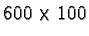

This project describes a nice rendering effect that creates the illusion of chiseling into stone. The example is illustrated using text, however, it can be applied to any shape. The chiseling effect is created using gradients, bumpmapping, and shadows--basically all the rendering tools discussed in this chapter.
The finished project will consist of three layers. The background layer will contains an image pattern, in this case pink marble. The top layer will contain text filled with the same image pattern and bumpmapped to make it look chiseled. The middle layer will be a drop shadow for the text.
To begin, a new image of dimensions

pixels is created.
It is then filled, using the Bucket Fill tool, with the pink
marble pattern from the Pattern Selection dialog. This layer is
labeled Marble Background in the Layers dialog and is shown in
Figure 8.34(a).
The transparent layer is made by clicking on the New Layer button in the Layers dialog, and the text is created by, first, selecting black as the Active Foreground Color, and, then, invoking the Text tool. The Text tool is used to place the word CHISELED, in the Engraver font, at a size of 72 pixels, into a floating selection. Cutting and repasting the float perfectly centers the text in the image window. It is then anchored to the transparent layer beneath it by clicking on the Anchor button in the Layers dialog. This layer is labeled Text in the Layers dialog, and the resulting image is illustrated in Figure 8.34(b).
The drop shadow is created by duplicating the Text layer, blurring it with Gaussian Blur (IIR) using a radius of 5 pixels, and then applying Offset with the values of 3 pixels for both the X and Y directions. This layer is then positioned between the Text and Marble Background layers using the positioning buttons in the Layers dialog button bar. This layer is labeled Text Shadow in the Layers dialog. The result is shown in Figure 8.34(c).
The next step is to fill the text in the Text layer with a shapeburst
gradient. For this, the layer
is made active by clicking on its thumbnail in the Layers dialog, and
the text is selected using the Alpha to Selection function from the Layers menu. Setting the Active Foreground Color and the Active Background Color to
white and black, respectively, the Gradient tool is used to fill
the text with a Shapeburst (angular) gradient. The selection is
then canceled by typing C-S-a in the image window, and the
result is shown in Figure 8.35(a).
The project is now almost complete. What remains is the application
of the shapeburst filled text as an embossing map to the marble
background layer. This is done, of course, using Bump
map. The Marble
Background layer is made active by clicking on its thumbnail in the
Layers dialog and the Bump map filter is invoked. The filter
dialog illustrated in Figure 8.36(b)
All that remains to complete this project is to move the chiseled text to the top layer of the stack. This is done in the following steps:
As a final flourish, the chiseled text is lightened somewhat to make
it more prominent against the marble background. This is done by
making the Text layer active and, as shown in
Figure 8.38(b), by adjusting the middle control
of the input slider of the Levels tool dialog.
Figure 8.38(b)